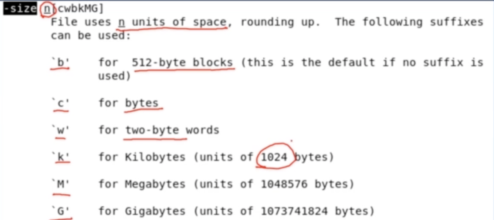

Linux基本指令1
基本概念
标准文件
- stdin 标准输入
- stdout 标准输出
- stderror 标准错误
基本命令
Cat命令
拼接文件
cat命令的功能是拼接文件 ， cat并不适合查看文件
因为当cat命令默认重定向到标准输出stdout ， 所以能看到显示屏上看到文件
当文件内容较多时，cat命令显示文件就会快速滚屏，且没有滚动条
1 | cat 1.txt 2.txt > 3.txt |
more命令
查看文件
但是只能向后翻页
less/zless命令
查看文件内容
cd命令
前往目录/文件
绝对路径
路径以‘/’开始
1 | cd /home/username |
相对路径
路径以‘..’开始
1 | cd ../src/linux |
pwd命令
以绝对路径的形式显示当前位置
ls命令
以列表的形式显示当前目录的内容（目录项）
基本选项
ls -i显示文件的索引节点号
共享文件就是共享同一个索引节点号
ls -a不忽略以‘ . ’开头的目录项
ls -l以长格式显示信息
cp命令
复制文件和目录 cp 源 目的
1 | # 复制文件 |
-r递归地复制目录 ， 因为目录里面可能还有目录
touch命令
改变时间戳的命令
使用
touch会改变文件的 访问时间(Access Time)和 修改时间(modification time) 都改为当前时间
-a只改变访问时间-m只改变修改时间-d指定要修改的时间-t指定要修改的时间
当touch命令后面的文件不存在时，创建一个空文件
mv命令
移动文件或重命名
位置相同-重命名
位置不同-移动文件
mkdir命令
创建新目录
rmdir命令
删除空目录
rm命令
- 删除文件
rm filename - 删除目录
rm -r dirname
ln命令
创建共享文件
1 | ln file1 file2 |
ln 如果不带有任何选项 ->创建硬链接
- i节点相同
- 实际为同文件
- 内容相同
- 修改同时
ln -s创建软链接共享文件
软链接与硬链接的对比
- i节点不同
- 对文件的链接数量影响不同
- 删除原文件结果影响不同
- 删除file1.txt file2.txt还在 但是file3.txt没有
- 软链接文件类型是l
- 软连接权限都是rwx
file命令
查看文件的类型
type命令
展示命令的信息
stat命令
查看 文件/文件系统 的状态
find命令
查找文件
根据文件名的查找格式
find 起始位置 -name 文件名
1 | find ./home fins -name hello.c |
更加复杂的案例
1 | find ~/mike ~/bill -size +1000 -atime 30 -ok rm {} \; |
两个起始位置
/mike/bill-size选项表示根据文件大小查找 -atime表示根据文件的最后访问时间进行查找 单位为天-ok与-exec相似 执行后面的命令- ok会询问 exec不会询问
- 如果命令运行的 他的standard input重定向到
/dev/null
本博客所有文章除特别声明外，均采用 CC BY-NC-SA 4.0 许可协议。转载请注明来自 扁同学不发言的个人博客！


评论